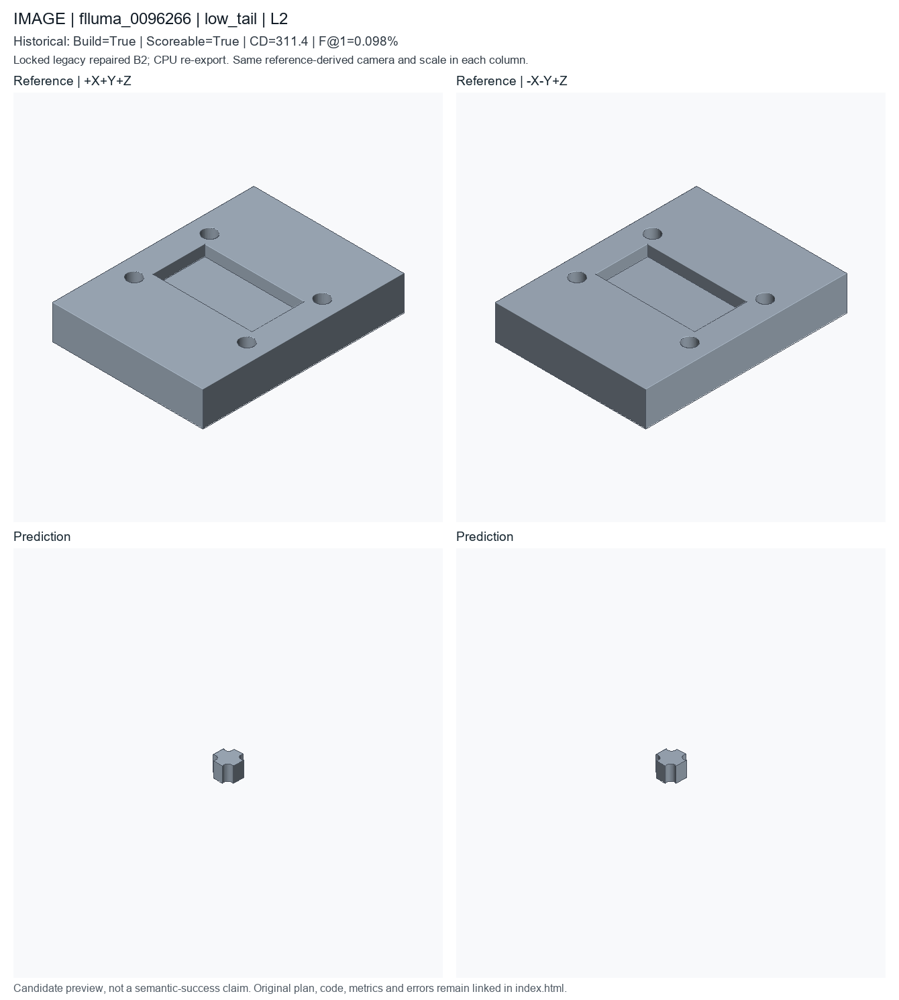
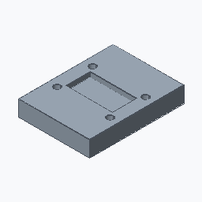

low_tail; L2; historical deployed repaired B2. Candidate status is unchanged.
Nearest complete-scoreable-cohort f1 percentile0.1, then cd percentile0.9; already registered IDs excluded
These are new CPU exports of locked historical code, not newly generated model predictions or recovered original temporary STEP files. Executable does not mean semantically accurate. Historical seed/checkpoint-byte binding remains unresolved.


A with one hole pattern with 4 service holes, 1 rectangular pocket, and rounded edges, approximately 70.7 by 53 by 12 mm. A pocketed service plate with 4 holes and a rectangular pocket, approximately 70.7 by 53 by 12 mm.
PART flluma_0005000 CAT mounting_block_with_counterbores UNITS mm SEED 20265514 PARAM hole_radius 1.41 MIN 0.8 MAX 5 SEM hole_radius PARAM pocket_length 10.1 MIN 6 MAX 42 SEM pocket_length PARAM pocket_width 12.1 MIN 4 MAX 26 SEM pocket_width PARAM thickness 7.1 MIN 3 MAX 18 SEM thickness F box_001 OP_BOX SEM base_plate ROLE primary_body PARAMS height=@thickness length=@thickness width=@thickness F hole_001 OP_HOLE_PATTERN SEM mounting_hole ROLE functional_feature DEP box_001 TARGET box_001.top_face PARAMS count=4 depth=THROUGH positions=[[-2.84,-3.025],[2.84,-3.025],[-2.84,3.025],[2.84,3.025]] radius=@hole_radius F pocket_001 OP_RECTANGULAR_POCKET SEM pocket ROLE functional_cut DEP hole_001 TARGET hole_001.top_face PARAMS depth=1.795 length=@pocket_length width=@pocket_width END
# Literal first40 lines of executed prediction; full program is prediction.py
params = Parameters()
params.add('hole_radius', 1.41, min=0.8, max=5.0, semantic_type='hole_radius')
params.add('pocket_length', 10.1, min=6.0, max=42.0, semantic_type='pocket_length')
params.add('pocket_width', 12.1, min=4.0, max=26.0, semantic_type='pocket_width')
params.add('thickness', 7.1, min=3.0, max=18.0, semantic_type='thickness')
part = Part('flluma_0005000', category='mounting_block_with_counterbores', parameters=params, seed=20265514, sample_id='flluma_0005000', units='mm')
plate = part.box(name='machined_mounting_block', length=params['thickness'], width=params['thickness'], height=params['thickness'], semantic_type='base_plate')
holes = part.hole_pattern(name='through_bolt_holes', target=plate.top_face(), radius=params['hole_radius'], depth='through', positions=[[-2.84, -3.025], [2.84, -3.025], [-2.84, 3.025], [2.84, 3.025]], semantic_type='mounting_hole')
pocket = part.rectangular_pocket(name='weight_relief_pocket', target=holes.top_face(), length=params['pocket_length'], width=params['pocket_width'], depth=1.795, semantic_type='pocket')
__all__ = ['part']